Willkommen auf der Infoseite zum Thema Ackerbau. Sie können zwischen den Unterthemen Getreide, Futtermittel sowie Nutzpflanzen wählen. Auswahl per Icon in der Sidebar.
Nachfolgend werden die Grundlagen des Ackerbaus erläutert
Grundsätzlich gilt das Prinzip:
Anpflanzen -> In Schuss halten -> Ernte einfahren.
Theoretisch ist das richtig, doch gehört in der Praxis meist mehr dazu. Um einen Acker auch effektiv bewirtschaften zu können,
bedarf es einiger Arbeitsschritte:
Ackerfrüchte gibt es viele, unter dem Begriff Getreide fasst man allerdings die meist einjährigen Süßgräser und deren Körner zusammen. Die neun grundlegenden Getreidesorten bilden dabei:
-
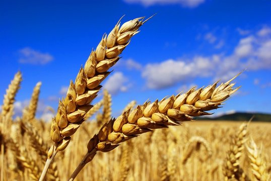Weizen - Vom Brötchen, über Futtermittel bis hin zum Weißbier. Weizen ist in vielen Lebensmitteln enthalten und spielt in anderen Industrien sowie der Produktion von tierischen Produkten wie Eier, Milch und Fleisch eine Rolle.
-
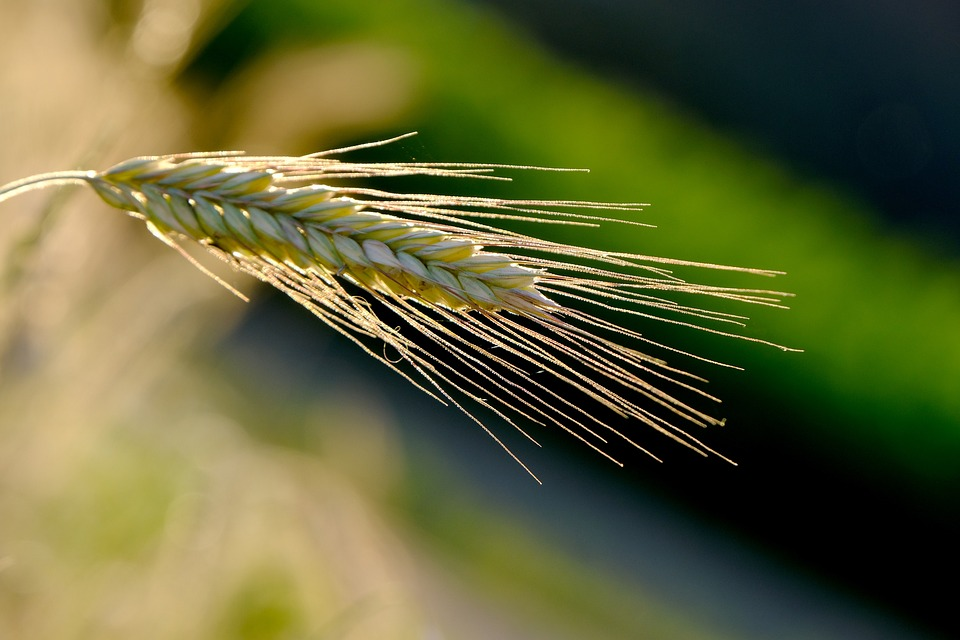Roggen - Neben seiner Hauptnutzung als gesundes „Vollkorn“ für Gebäcke findet man den Roggen auch bei der Bierherstellung. Er wird begleitend zur Gerste als Ergänzung bei der Malzherstellung genutzt oder ersetzt Sie gänzlich. Des weiteren wird Roggen auch in der Papier und Klebstoff Herstellung verwendet.
-
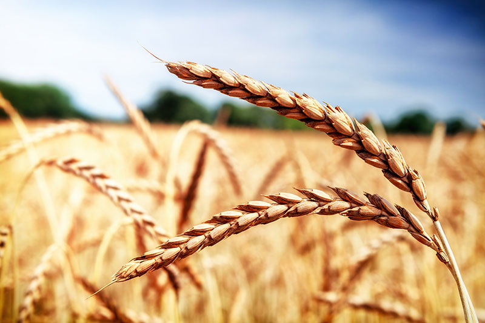Dinkel - Sehr verträgliches Getreide. Wunderbar als Weizenersatz geeignet hat Dinkel einen leicht nussigen Geschmack. Neben den klassischen Gebäcken wird Dinkel(mehl) oft für die Herstellung von Nudeln und anderen „gesunden“ Snacks genutzt. Ferner dient es, wie Roggen, als Ergänzung beim Bierbrauen.
-
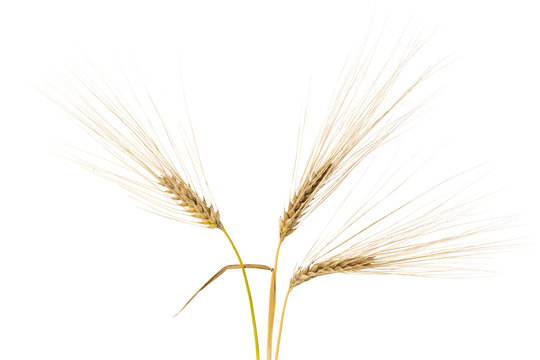Gerste - Hauptsächlich bekannt als Gerstenmalz für Bier (und Whiskey), wird Gerste ebenfalls oft als Futtermittel bei der Rinder und Schweinehaltung genutzt. Ferner wird es auch in Eintöpfen und Suppen aufgrund seiner Textur und des nussigen Geschmacks verwendet.
-
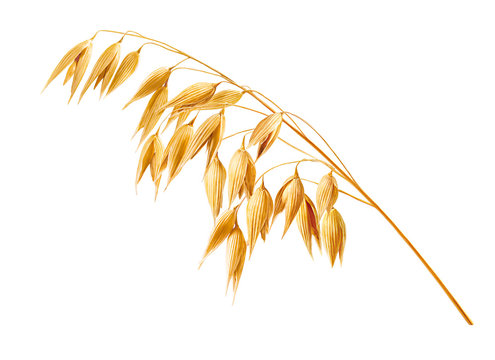Hafer - Allseits aus dem morgentlichen Porridge bekannt, wurde es schon im Mittelalter als Haferschleim konsumiert. Der damals abgesiebte, und heute in Rohform verfütterte, Hafer dient gerade bei Pferden als Grund-Futtermittel.
-
Hirse - Ein weit verbreitetes, glutenfreies Getreide, das eher in den USA als Europa kultiviert wird. Hirse wird oft für Cornflakes (entgegen des Namens) verwendet, aber auch zur Tiermästung. Des weiteren findet Sie Anwendung in der Kosmetikindustrie, da die Hirse-Extrakte und Öle hautpflegend wirken.

-
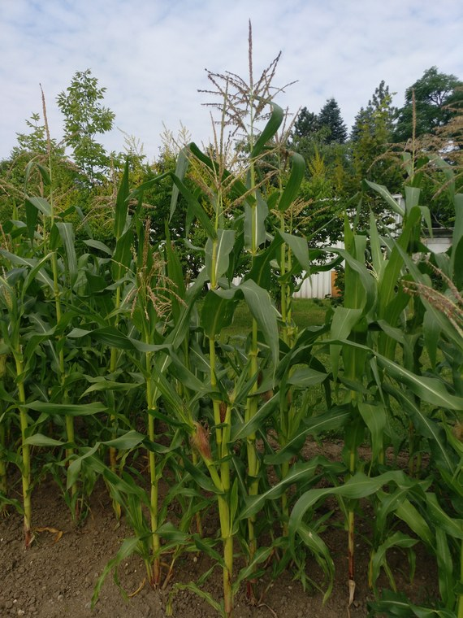Mais - Obwohl ikonisch als Kolben oder Körner in der Dose bekannt, wird der Großteil der globalen Maisproduktion an Tiere verfüttert. Wichtig hierbei anzumerken ist, dass sich Mais für Menschen (fachlich Zuckermais) und für Tiere genetisch unterscheiden, hauptsächlich im Kohlehydrate- Gehalt der Körner (damit auch Konsistenz und Geschmack). Außerdem wird Mais, je nach Konsument, verschieden verarbeitet/geerntet. Stichwort Silage (mehr dazu bei Futtermittel).
-
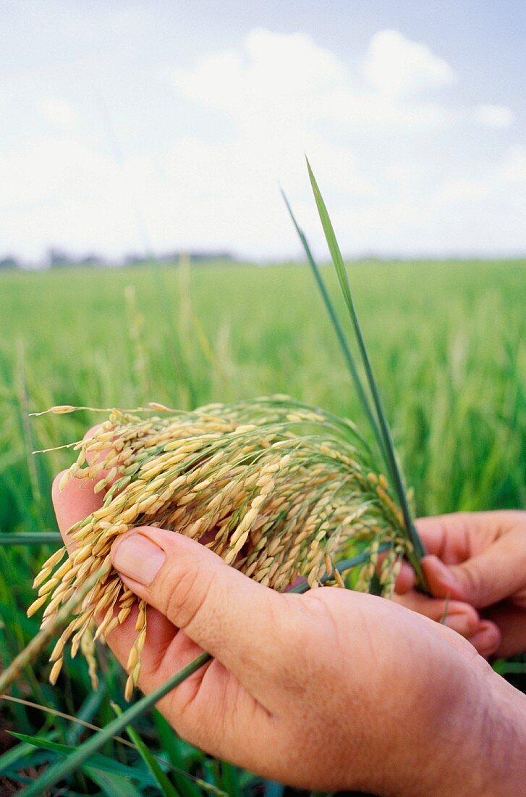Reis - Überwiegend als Lebensmittel für Menschen genutzt, findet er auch Anwendung in der Herstellung von Schnaps und Wein.
- Triticale - Eine Kreuzung aus Weizen und Roggen. Seltener für Lebensmittel verwendet, dafür nicht weniger schmackhaft. Oft wird es zur Tierfütterung genutzt oder als Erosionsschutz in Hanglage, aufgrund seiner tiefen Wurzeln, gepflanzt.
Wie in „Getreide“ beschrieben werden viele Ackerfrüchte an Tiere verfüttert. Dies wird nun etwas vertieft:
-
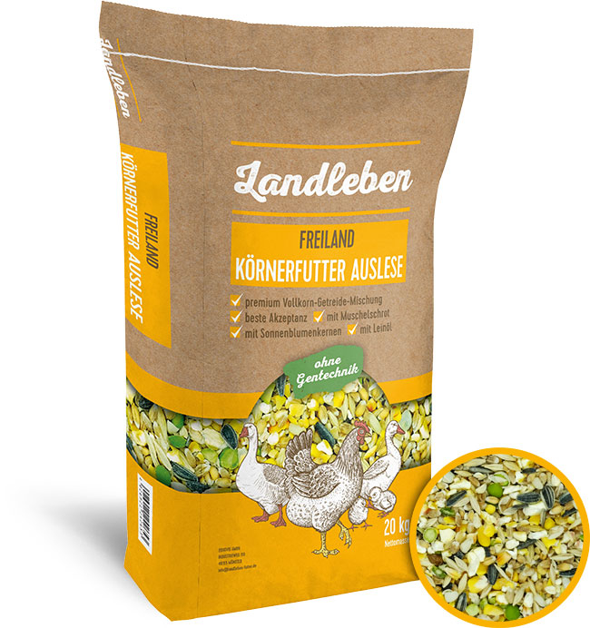Körnergetreide - Ob Weizen, Roggen Triticale oder andere. Die meisten Körnersorten werden auch als solche, oder als Getreideschrot, verfüttert. Bei Hühnern z.B. stellen sie sogar den Hauptbestandteil der Nahrungsaufnahme. Man denke an ein Maishändl, dass auf strenger Diät ist.
-
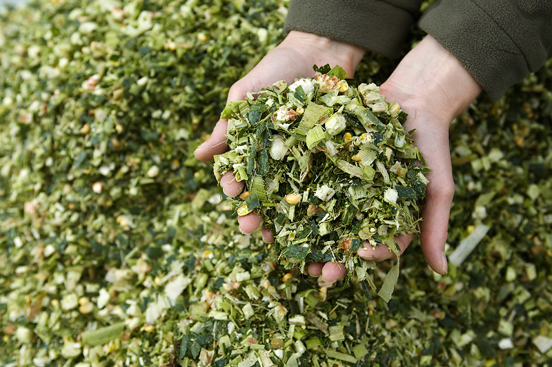Maissilage - Anders als beim Körnermais, wird für die Maissilage die ganze Pflanze geerntet. Das heißt, dass die Kolben zusammen mit der Pflanze verarbeitet werden. Durch eine Messerwalze wird die Pflanze auf meist 8-25mm Körnung gehäckselt (mehr zum Ernteprozess unter Agrartechnik). [BILD Maishäckselgut]
-
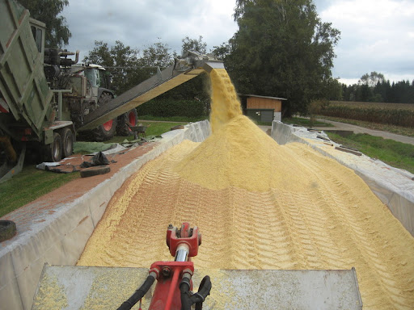Corn-Cob-Mix - Kurz CCM, ist eine i2termischung bei dem Sowohl die Körner als auch der Strunk zu Schrot verarbeitet werden. Dieses Schrot, oder auch CCM-Silage, wird in Silos zu Konservierungszwecken fermentiert. Es besticht durch seine herausragenden Energiewerte und wird daher überwiegend in der Schweinemast, seltener auch in der Rinderzucht, verfüttert.
-
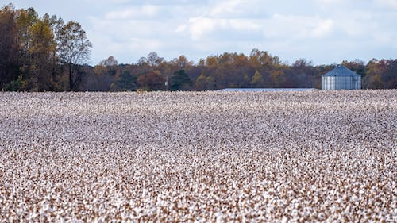Baumwolle - Ein essenzieller Bestandteil unseres Lebens. Von der Kleidung bis hin zum Verbandszeug ist Baumwolle oft anzutreffen. Durch die industrielle Ernte ist Kleidung zum sehr erschwinglichen Gut geworden.
-
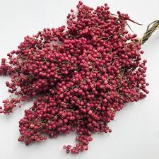Gewürze
-
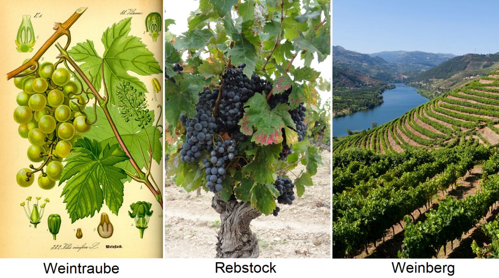Wein - Man unterscheidet zwischen roten und weißen Trauben. Aus diesen kann wiederrum Rot- oder Weißwein, ferner auch rosé oder orange, sowie Perlwein hergestellt werden. Die bekannte Traube kann also sowohl als Frucht, aber auch als (alkoholisches) Getränk genossen werden. Der Weinanbau braucht spezielles Gerät zur Instandhaltung und Ernte. Alternativ wird diese noch händisch eingefahren.